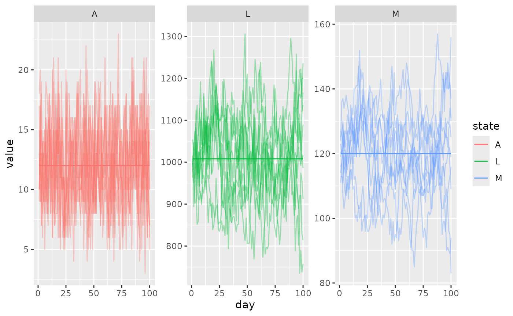

The simplest non-trivial model of aquatic mosquito dynamics which exhibits density-dependence (negative feedback) is a Beverton-Holt (BH) style model. It is a kind of discrete logistic equation. We have implemented a BH model that conforms to the aquatic (immature) component interface to be used with other mosquito models fulfilling the adult component interface.
The model groups all immature mosquito stages into a single
compartment L. Each time step some number may mature and be
ready to emerge as adults, A. The model requires 3
(potentially time and patch varying parameters), K, which
determines the strength of density dependent mortality,
surv, the baseline daily survival probability, and
molt, the daily proportion of immature mosquitoes which
mature and emerge as adults.
Deterministic model
The state updating equation is as follows:
\[\begin{equation} L_{t+1} = eggs + (1-molt) \cdot surv \cdot L_{t} \cdot \left( \frac{K}{L_{t}+K} \right) \\ A_{t} = molt \cdot surv \cdot L_{t} \cdot \left( \frac{K}{L_{t}+K} \right) \end{equation}\]
Stochastic model
In the stochastic model on a time step, we first draw the number of survivors:
\[\begin{equation} survivors \sim \mathrm{binomial}(L, surv \cdot \left( \frac{K}{L_{t}+K} \right) ) \end{equation}\]
The number who emerge is also a binomial random variate:
\[\begin{equation} emerge \sim \mathrm{binomial}(survivors, molt) \end{equation}\]
Then state is updated:
\[\begin{equation} L_{t+1} = eggs + survivors - emerge \\ A_{t} = emerge \end{equation}\]
Deterministic equilibrium
Despite being a nonlinear equation, we can solve the equilibrium. We
assume that eggs is known, and that the desired daily
emergence is known (lambda, or A in the BH
model’s notation). Then we solve for K and
L:
\[\begin{equation} L = \lambda \left( \frac{1}{molt} - 1 \right) + eggs \\ K = \frac{-\lambda L}{\lambda - L \cdot molt \cdot surv} \end{equation}\]
We can set up a simulation using the RM mosquito model to check that everything is at equilibrium. First we calculate the equilibrium values. We do not use any components other than the aquatic and adult mosquito components.
patches <- 1
tmax <- 1e2
M <- 120
p <- 0.9
lambda <- M*(1-p)
nu <- 25
f <- 0.3
eggs <- nu * f * M
# static pars
molt <- 0.1
surv <- 0.9
# solve L
L <- lambda * ((1/molt) - 1) + eggs
K <- - (lambda * L) / (lambda - L*molt*surv)Let’s set up the model. We use make_MicroMoB() to set up
the base model object, and setup_aqua_BH() for the
Beverton-Holt aquatic model with our chosen parameters.
setup_mosquito_RM() will set up a Ross-Macdonald model of
adult mosquito dynamics.
We run a deterministic simulation and store output in a matrix.
# deterministic run
mod <- make_MicroMoB(tmax = tmax, p = patches)
setup_aqua_BH(model = mod, stochastic = FALSE, molt = molt, surv = surv, K = K, L = L)
setup_mosquito_RM(model = mod, stochastic = FALSE, f = f, q = 0.9, eip = 10, p = p, psi = diag(1), nu = nu, M = M, Y = 0, Z = 0)
out_det <- data.table::CJ(day = 1:tmax, state = c('L', 'A', 'M'), value = NaN)
out_det <- out_det[c('L', 'A', 'M'), on="state"]
data.table::setkey(out_det, day)
while (get_tnow(mod) <= tmax) {
step_aqua(model = mod)
step_mosquitoes(model = mod)
out_det[day == get_tnow(mod) & state == 'L', value := mod$aqua$L]
out_det[day == get_tnow(mod) & state == 'A', value := mod$aqua$A]
out_det[day == get_tnow(mod) & state == 'M', value := mod$mosquito$M]
mod$global$tnow <- mod$global$tnow + 1L
}Now we run the same model, but using the option
stochastic = TRUE for our dynamics, and draw 10
trajectories.
# stochastic runs
out_sto <- mclapply(X = 1:10, FUN = function(runid) {
mod <- make_MicroMoB(tmax = tmax, p = patches)
setup_aqua_BH(model = mod, stochastic = TRUE, molt = molt, surv = surv, K = K, L = L)
setup_mosquito_RM(model = mod, stochastic = TRUE, f = f, q = 0.9, eip = 10, p = p, psi = diag(1), nu = nu, M = M, Y = 0, Z = 0)
out <- data.table::CJ(day = 1:tmax, state = c('L', 'A', 'M'), value = NaN)
out <- out[c('L', 'A', 'M'), on="state"]
data.table::setkey(out, day)
while (get_tnow(mod) <= tmax) {
step_aqua(model = mod)
step_mosquitoes(model = mod)
out[day == get_tnow(mod) & state == 'L', value := mod$aqua$L]
out[day == get_tnow(mod) & state == 'A', value := mod$aqua$A]
out[day == get_tnow(mod) & state == 'M', value := mod$mosquito$M]
mod$global$tnow <- mod$global$tnow + 1L
}
out[, 'run' := as.integer(runid)]
return(out)
})
out_sto <- data.table::rbindlist(out_sto)Now we process the output and plot the results. Deterministic solutions are solid lines and each stochastic trajectory is a faint line.
ggplot(out_sto) +
geom_line(aes(x = day, y = value, color = state, group = run), alpha = 0.35) +
geom_line(data = out_det, aes(x = day, y = value, color = state)) +
facet_wrap(. ~ state, scales = "free")